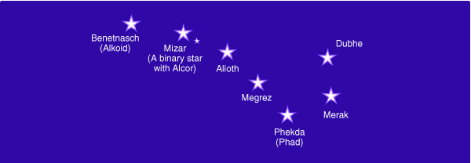

Kurz Boží Vùle
Tvoøení s pomocí Boží Vùle
Tento èlánek se týká desáté strany z pásek Orinova kurzu Transformace s pomocí Boží Vùle (MM050) a odkazuje na diskusní fórum.
Pozdrav od Orina
Všichni dohromady tvoøíte z tìchto energií nádherné spoleèné svìtlo, které otevírá kanál Boží Vùle pro mnohé, kteøí vás budou následovat. Protože jste se spojili s tìmito Bytostmi pøedávajícími Boží Vùli, pøibyla ve vaší auøe nová záøící èistá substance, která z našeho pohledu a pro ty, kteøí jsou jasnozøiví, vypadá jako jemný tøpyt. Tato substance sama od sebe pracuje na tom, aby pøitahovala další nádherné energie do vašeho života. Pøechod k tìmto energiím mùže být tak snadný nebo podnìtný, jak si ho udìláte! Opouštìní starého, odpouštìní, láska k vaší minulosti a otevøenost novinkám vám pomùže mnohem radostnìji prožít vše, co vám mùže Vesmír nabídnout, když se transformujete s pomocí Boží Vùle.
Vložili jste èas a energii do vyslání sedmi kvalit Boží Vùle ke svým cílùm. Sjednotili jste vaše cíle se zámìry vaší duše a s Boží Vùlí, proèistily je, pøizpùsobily a vyjasnily. Za vašimi cíli nyní stojí mnohem více energie než pøed tím, než jste zaèali s tímto kurzem. Díky infuzi spirituální energie jste pøipraveni dodat ještì další spirituální energii vašim cílùm, když k nim souèasnì vysíláte všech sedm kvalit Boží Vùle.
Vyberte si jeden cíl k manifestování
Tento týden bych vám doporuèil, abyste si vybrali jeden cíl ze svého seznamu, na kterém budete pracovat. (Mnozí z vás vytvoøili seznam s mnoha pozemskými i spirituálními cíli.) Když jste si vybrali nìjaký nehmotný cíl, jako napøíklad "Chci prožívat život naplnìný duší", vyberte si zpùsob, ze kterého poznáte, že jej plníte, a napište si jej. Napøíklad: "Když budu prožívat život naplnìný duší, poznám to podle ...". Mùžete zvolit jednu, nebo dvì události, podle kterých poznáte, že se cíl plní. Nebo si mùžete zvolit nìjaký projekt, nìco, co chcete vnést do svého života, na èem pracujete. Ujistìte se, že je váš cíl dostateènì specifický, abyste poznali, že se uskuteèòuje. Další podmínkou je, abyste si nezvolili cíl, ve kterém se musí nìjak zmìnit nìkdo jiný; vyberte nìco, co je ve vašich možnostech.
Zveøejnìte váš cíl v diskusním fóru
Zapište váš cíl tak jasnì, jak jen to jde. Zveøejnìte jej (v diskusním fóru – jesliže toto anglické fórum používáte) jakmile jej zapíšete, jakožto jasné prohlášení vašeho zámìru smìøované Vesmíru.
Tvoøíte jasnou "myšlenku" o tom, co chcete do svého života vnést. Myšlenka je nesena substancí, je živá, letí vesmírem a pøitahuje k vám to, o èem pøemýšlíte. Tentokrát naplníte myšlenku vašeho zámìru všemi sedmi kvalitami Boží Vùle a vyšlete ji do vesmíru, aby se projevila. Vámi jasnì stanovený zámìr obklopil vaší myšlenku substancí a zaène k vám pøitahovat události, situace, okolnosti a vnitøní zmìny, které z vás udìlají silnìjší magnet pro tento zámìr. Nìkdy se tomu øíká "precipitovaná energie" - kondenzace jemnohmotných energií myšlenek na hustší hmotu, která se projeví jako forma, okolnosti a situace ve vašem fyzickém svìtì.
Projdìte si všechny vaše cíle
Jestliže jste své cíle zveøejnili v diskusním fóru, znovu si je pod svým jménem projdìte - jak pozemské, tak i spirituální cíle. Použijte tlaèítko "odpovìdìt" a vytvoøte vaše cíle znovu, definované s jasností a zøetelností, kterou jste mezitím získali. Tím posloužíte všem, kteøí to po vás budou èíst, protože se jim tím vyjasní jejich cíle i jak práce s Boží Vùlí èistí a vyjasòuje cíle. Bude pro nì informací i inspirací, když se dozví, jak Boží Vùle transformovala vaše cíle. Jestliže se vaše cíle nijak nezmìnily, je to též v poøádku. Udìlejte si k nim poznámku, že se nezmìnily. Bude jasné, že vaše cíle jsou vyjasnìné.
Jaké další vìci ještì sledovat
Sledujte jaké to je, pracovat se všemi sedmi kvalitami Boží Vùle i cokoliv dalšího, co si mùžete poznamenat o vašich zkušenostech s manifestováním, za pøispìní sedmi kvalit Boží Vùle. Poznamenejte si, jestli se nìkteré vaše cíle již manifestují, zaèínají se tvoøit, zmìnily se nebo byly zamìnìny za jiné cíle. Vaše cíle se nemusí manifestovat hned, ale - protože energie následuje myšlenku - dali jste do pohybu energie vašich cílù, které k vám pøijdou v ten pravý èas a tím nejlepším zpùsobem.
Krátké shrnutí, jak manifestovat za pomocí všech sedmi Vùlí:
Abyste manifestovali nìjaký cíl, mùžete zaèít iniciací nového vìdomí pomocí Vùle k Iniciaci, abyste vnesli více uvìdomìní do urèité oblasti vašeho života a lépe poznali, co je tøeba.
Mùžete se spojit s Vùlí ke Sjednocení, abyste získali širší vizi toho, jaké zmìny je potøeba provést, sjednotili všechny èásti vašeho bytí, rozšíøili svoji schopnost milovat a stali se lépe spojeni s veškerým životem a tedy více magnetiètí pro vše, co je urèeno pro vaše vyšší dobro.
Spojením s Vùlí Vyvíjet se rozvinete své schopnosti a vìdomosti a budete schopni formulovat plán na uskuteènìní vašich cílù.
Spoluprácí s Vùlí k Harmonii docílíte vìtší nádhery a harmonie v dané oblasti a uvolníte všechna zatuhlá místa a omezení. Vaše prohloubená intuice vás povede k takovým postupùm a èinùm, které vás sjednotí s proudem vesmíru a s Boží Vùlí.
Spojení s Vùlí Jednat vám pomùže vytvoøit jasné myšlenkové ideály, naplnìné svìtlem vaší vyšší mysli, takže budete mít jasno v tom, co manifestujete a bude to napomáhat osvobození vašeho ducha od všech forem, které vás omezují. Mùžete se vymanit z pout svìta hmotných forem a nauèit se myslet jasnì a vìdecky.
Když se spojíte s Vùlí Zpùsobovat, objevíte skryté motivy vaší tvorby, zbavíte se tìch, které jsou vytvoøeny vaším egem a zdùrazníte ty, které touží vaše duše vnést do vašeho života. Vše, co tímto zpùsob vytvoøíte, vám pøinese více radosti a naplní vyšší zámìr vašeho života.
Když využijete energii Vùle Vyjádøit se, budou se vaše cíle manifestovat organizovaným zpùsobem, peèlivì a dokonale, s kvalitnì zpracovanými detaily, takže budou vyjadøovat božství ve formì. Budete tvoøit nebe na zemi a uskuteèòovat "to co je nahoøe v tom, co je dole".

Sedm hvìzd v souhvìzdí Velkého vozu má sedm jmen; jsou fyzickou manifestací sedmi Velkých Bytostí, které pøedávají sedm kvalit Boží Vùle a zámìr pro lidstvo. (Nebylo vyjeveno, která hvìzda je nositelem které kvality).
Benetnasch (nebo též Alkaid)
Mizar (dvojhvìzda; její prùvodce se nazývá Alcor)
Alioth
Megrez
Dubhe
Merak
Phekda
© Copyright Lumin Essence Productions: Na všechny informace se vztahuje autorský zákon a nesmìjí být bez svolení reprodukovány - viz. Copyrights and Permissions na originálních www.
pøeklad Vratislav Kašpárek 2002